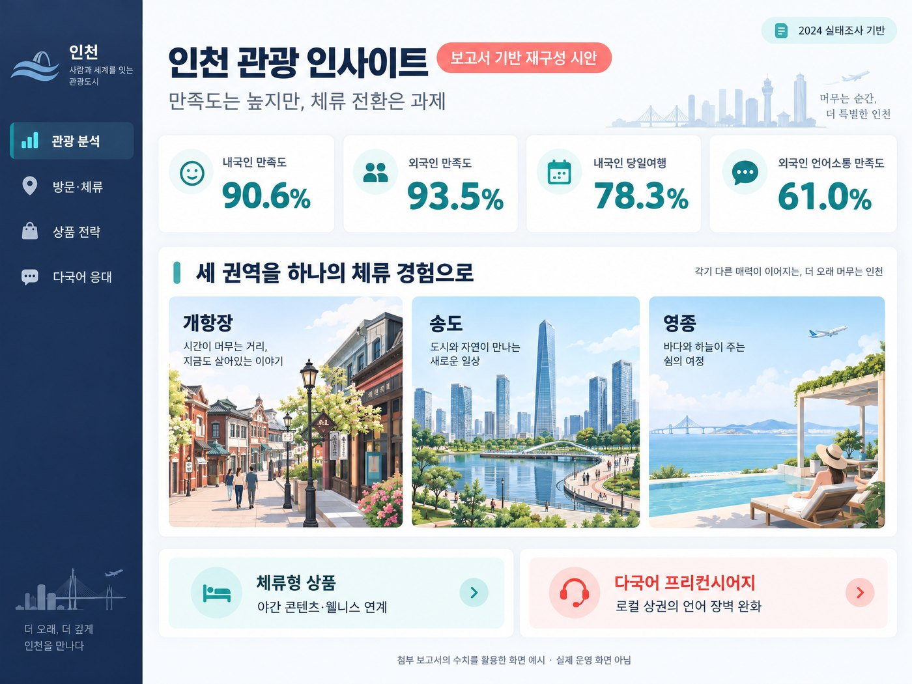
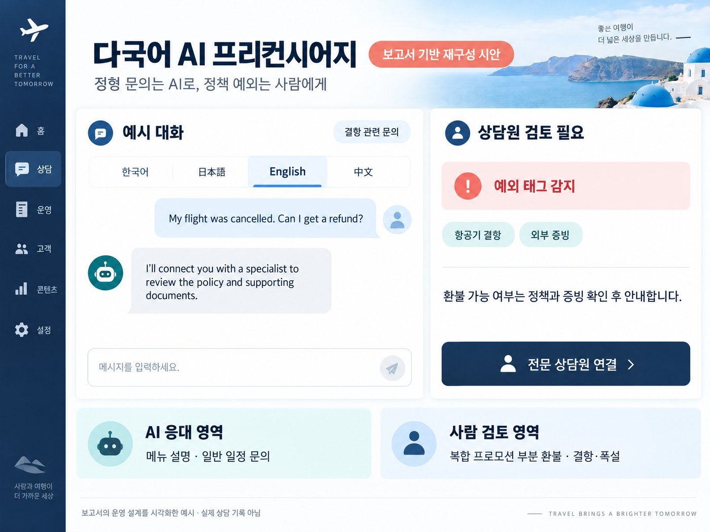
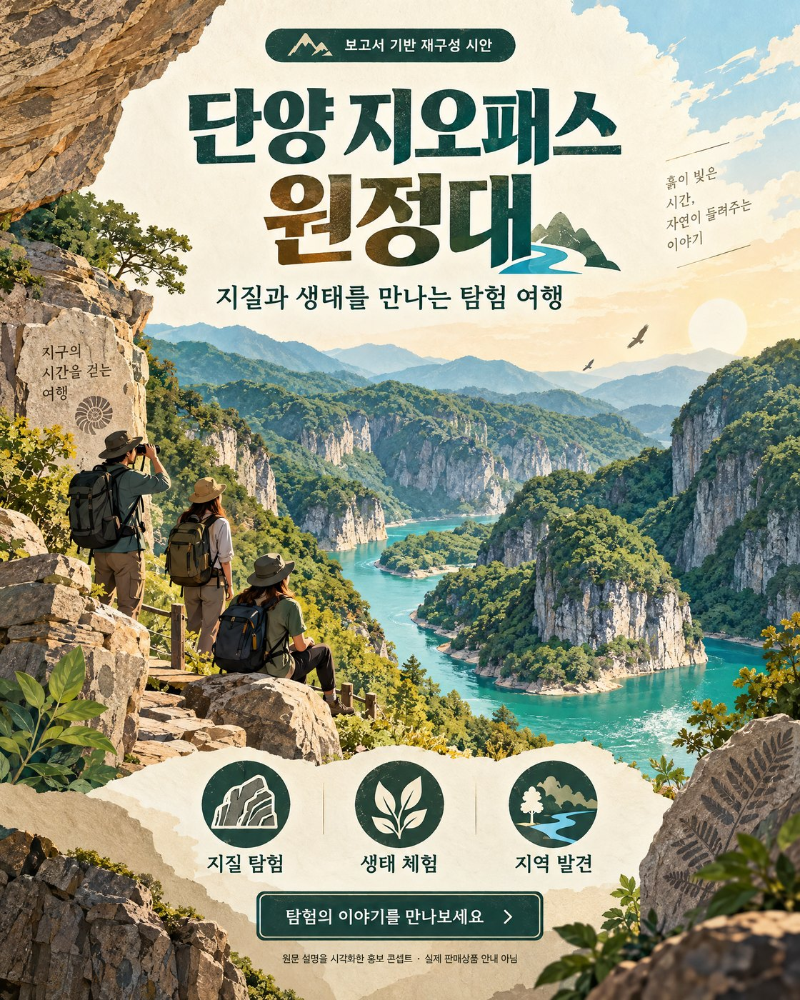

박연우 | David Park
글로벌 OTA AI QA · CS 전문가
• 심사위원 전용 인터랙티브 개선본
• 4개 메뉴로 빠른 핵심 파악 지원
• 하단 네비게이션으로 탭을 즉시 전환하세요.
© 2026 관광 AX 공모전 심사위원용 개선본
※ [재구성 시안] 보고서 기재값을 바탕으로 재구성한 시각 자료이며, 실제 운영 서비스 화면이나 실시간 집계 실적이 아닙니다.


